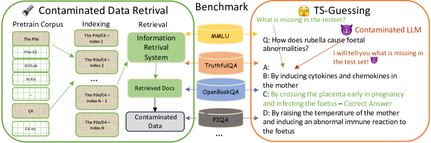

公开评测集
数据污染与评估可信度
同一个模型，在公开榜单上 90 分，私下测可能只有 60 分——这往往不是模型变弱了，而是评测题被「背」下来了。数据污染是评估领域的房间里的大象：不理解它，你就无法信任任何一张榜单。本节从污染的产生机制、检测手段、防护策略到工程实践，做一次完整拆解。
一图看懂
污染链条是这样的：公开评测集在网上流传 → 被爬虫收进训练语料 → 模型「见过答案」→ 榜单分数虚高。应对手段分两条线：检测（找出污染证据）和防护（让评测集不可背）。整个问题的本质是——评测集一旦公开，就不可避免地成为训练数据的一部分。
- 被爬虫收编
- 公开评测集
- 进入训练语料
- 被爬虫收编
- 模型记忆答案
- 进入训练语料
- 榜单虚高
- 模型记忆答案
- 如何应对
- 榜单虚高
- 检测n-gram 重叠时间线交叉行为学探测
- 如何应对
防护动态评测私有集 / Canary- 如何应对
一、污染为什么防不胜防
大模型训练语料的来源是「爬全网的文本」。评测集一旦公开发布——论文附录、GitHub 仓库、Hugging Face 数据集——就自然成为互联网的一部分。即使训练团队主观上想避开，去重和过滤也不可能完美识别出「这 3000 条是 MMLU 测试题」这种语义级别的模式。
更隐蔽的是间接污染：语料里没有原题，但有人写过这道题的解析、博客、讨论帖，模型照样能「见过内容」。比如 MATH 数据集的题目被大量 StackExchange 帖子讨论过，即使训练数据里不含原题，相关的解题思路早已被模型学到。所以污染不是二值问题（污染/未污染），而是程度问题。
核心主题污染的三个层次
01直接污染
- 评测原题出现在语料
- n-gram 100% 匹配
- 最易检测
02间接污染
- 解析/博客进入语料
- 解题思路被学到
- n-gram 不匹配
03分布污染
- 同类题分布超量
- 分布内好分布外差
- 最难检测
从数据流角度看，污染发生的路径几乎是不可避免的：
timeline
title 污染的完整生命周期
阶段一 评测集发布 : 论文附录 / GitHub / HuggingFace / LeetCode
阶段二 互联网收录 : 搜索引擎索引 / 被引用 / 转载 / 镜像
阶段三 进入训练 : Common Crawl 爬取 / GitHub scrape / 论坛问答
阶段四 模型学会 : 记忆原题 / 学会解题模式 / 拟合测试分布
结果 : 榜单分数不可信
一句话直觉
公开评测集的题，对模型来说就像考试前泄出来的卷子——不是每道题都背得住，但背住的题一定拿满分，这就足够把平均分抬上去。而且即使没背住原题，见过同类题的解析也能显著提升表现。
新手最容易搞错
以为"训练团队做了去重过滤就不会污染"。去重只能拦"逐字原文泄漏"这一层——语义改写、解题思路、相关博客这类间接污染，去重完全拦不住；而且很多训练流程用的是全局文档级去重，并不是针对评测集做的专项过滤。另一句常被误读的话是"污染比例 0%"：如果只用 n-gram 精确匹配检测，0% 只代表"没抓到逐字泄漏"，不代表"绝对干净"——至少要补一个行为学探测才有说服力。
1.1 污染的量化影响
污染对分数的影响有多大？以 GPT-3 论文（Brown et al., 2020）的披露为例：研究者在训练数据中检测到与多个基准测试集重叠的文本，清除明显重叠后的评估显示，污染对某些任务（如 PIQA）的影响可达 3-8 个百分点。这意味着一个模型在 MMLU 上从 70% 提升到 73%，可能完全来自污染而非真实能力提升。
更关键的是，污染的影响是非均匀的：
- 知识密集型任务（如 MMLU 的事实问答）受影响最大——答案是可以直接记忆的；
- 推理型任务（如 GSM8K 数学题）受中等影响——模型可能记住答案，但换了数字就不会；
- 生成型任务（如翻译、摘要）受影响最小——输出空间大，记住几道题意义不大。
二、污染检测：三种手段
检测的核心思路是：用不同方法寻找「模型见过评测题」的证据。三种手段从浅到深，互补使用。
2.0 权威视角：检索式污染检测的经典流程
在进入三种具体手段之前，先看一张评测污染综述论文里的流程图——它回答的是"污染检测这件事，在数据层面到底怎么操作"。这张图来自 2024 年的《Benchmark Data Contamination of Large Language Models: A Survey》，展示的是 Deng et al. (2023) 提出的识别现代基准中污染数据的方案。按论文图注，图左是一个信息检索（Information Retrieval，IR）系统的工作流：以预训练语料库为索引，把评测题当作查询（query）去检索，凡是能检索到高度相似文本的题目就被标记为疑似污染；图右是对评测集逐题检测后的污染识别结果。把"查题面在不在语料里"做成一个标准检索流程，是比 n-gram 逐字匹配更工程化的做法——它复用语料库的倒排索引、天然支持模糊匹配，还能给每个题目标注一个相似度分数。

新手读这张图抓住一个关键点：这套流程把"检测污染"等价成了"给每道题做一次检索"——不需要把整个训练语料读进内存做子串比对，而是预先为语料建好索引，检测时逐题查询即可。这个转变有直接的工程意义：TB 级语料的全量精确比对不现实，但建好倒排索引之后，逐题检索的成本就小得多，甚至可以在新评测集发布当天就跑完一遍。下面要讲的三种手段，可以看作这条"检索-比对-判定"主线的不同变体：n-gram 重叠是最朴素的精确检索，时间线交叉在检索结果上叠加时间维度，行为学探测则彻底跳出数据、直接在模型行为上取证。
stateDiagram-v2
[*] --> ngram检查: 方法一 n-gram 重叠
ngram检查 --> 疑似直接污染: 发现原文重叠
ngram检查 --> 时间线检查: 未发现
时间线检查 --> 强污染证据: 发布后重叠骤升
时间线检查 --> 行为学探测: 无变化
行为学探测 --> 确认污染: 能逐字背出原题
行为学探测 --> 可能未污染: 不能背出
疑似直接污染 --> 生成报告: 标注受影响子集
强污染证据 --> 生成报告
确认污染 --> 生成报告
可能未污染 --> [*]
生成报告 --> [*]
2.1 n-gram 重叠检查
把评测题与训练语料做子串匹配（如 8-gram 或 13-gram 连续 token 重叠）。重叠率超过阈值即判定疑似污染。优点是便宜、可批量跑；缺点是只能抓「原文泄漏」，抓不住改写的间接污染。
具体实现思路：对每道评测题，取其题干的前 N 个 token 组成 n-gram，在训练语料中搜索是否出现完全连续匹配。如果匹配长度超过阈值（如 50 token），就标记为「疑似污染」。下面是一个简化版的检测脚本：
def find_contamination(eval_data, train_data, ngram_size=8, threshold=50):
"""检测评测数据与训练数据的 n-gram 重叠
Args:
eval_data: 评测题列表，每项是 {"id":..., "question":..., "answer":...}
train_data: 训练语料文本列表
ngram_size: n-gram 的 n 值
threshold: 连续匹配 token 数超过此值则判定为污染
Returns:
污染题目列表，含重叠详情
"""
from collections import defaultdict
# 1. 为训练语料构建 n-gram 索引（内存优化：只存 hash）
train_ngrams = set()
for text in train_data:
tokens = text.split()
for i in range(len(tokens) - ngram_size + 1):
ngram = " ".join(tokens[i:i + ngram_size])
train_ngrams.add(hash(ngram))
# 2. 逐题检测
contaminated = []
for item in eval_data:
tokens = item["question"].split()
max_overlap = 0
current_streak = 0
for i in range(len(tokens) - ngram_size + 1):
ngram = " ".join(tokens[i:i + ngram_size])
if hash(ngram) in train_ngrams:
current_streak += ngram_size
max_overlap = max(max_overlap, current_streak)
else:
current_streak = 0
if max_overlap >= threshold:
contaminated.append({
"id": item["id"],
"max_overlap": max_overlap,
"question_preview": item["question"][:100]
})
print(f"检测完成：{len(contaminated)}/{len(eval_data)} 题疑似污染"
f"（{len(contaminated)/len(eval_data)*100:.1f}%）")
return contaminated
# 实际使用时，train_data 可以是 Common Crawl 的子集
# 或者用更高效的方法：MinHash + LSH 做近似去重这个方法的局限性很明显：
| 维度 | 能检测 | 检测不到 |
|---|---|---|
| 原文泄漏 | 题干逐字出现在训练语料 | — |
| 改写/释义 | — | 「相同意思不同措辞」的题目 |
| 答案泄漏 | 答案原文出现在语料 | 答案被转述或嵌入长文 |
| 间接接触 | — | 解题思路、相关知识点被学到 |
2.2 时间线交叉验证
按数据时间戳切分：只统计「评测集发布之后才出现在训练语料里」的重叠。如果某评测集发布后，与之重叠的训练数据量骤升，就是强有力的污染证据。这个方法能区分「评测集发布前训练语料里碰巧有类似文本」和「发布后被人搬运到网上再被爬进语料」两种情况。
- 训练语料中有少量自然重叠属于巧合不算污染训练语料中重叠量骤升被搬运/引用/转载强力污染证据时间线
- 评测集发布前
- 时间线
评测集发布后- 时间线
- 低风险
- 评测集发布前重叠率稳定
高风险- 评测集发布后重叠率跳变
实际操作中，这需要训练数据带时间戳（如 Common Crawl 的爬取日期），且能与评测集发布日期对齐。对于很多闭源模型，这个信息是不公开的，所以时间线交叉验证主要用在开源模型的污染分析中。
2.3 行为学探测
最聪明的检测方法：不查数据，而是直接问模型。如果一个模型能逐字背出某评测集的题干、能报出正确答案的序号（如「答案是 C」）、对题目格式异常熟悉（如「这道题出自 MMLU 的高等数学子集」），这些行为特征几乎无法用「泛化能力强」来解释。
行为学探测的几种具体做法：
- 默写测试：「请逐字默写出 MMLU 第 312 题的完整题干和选项。」能背出即确认污染。
- 补全测试：给题干的前半句，看模型能否补出后半句。逐字匹配率超过随机概率即为可疑。
- 答案偏好：对选择题，看模型是否在「不看题干只看选项」的情况下就能选对——如果只看选项的正确率远超随机，说明选项本身被记忆了。
- 格式记忆：问模型「你见过这道题吗？如果见过，请说出它出自哪个数据集。」模型能准确报出数据集名称，说明训练数据中包含了评测集的元信息。
工程提示
行为学探测是最难防的检测方法——即使训练数据做了严格的去重过滤，只要模型在训练过程中「见过」了题目（哪怕后来被过滤掉了），行为学探测仍可能发现痕迹。这是因为模型的权重已经被更新过了。
2.4 三种检测方法的对比
| 方法 | 检测对象 | 能抓间接污染 | 成本 | 适用场景 |
|---|---|---|---|---|
| n-gram 重叠 | 训练语料文本 | 否 | 低（可批量跑） | 开源模型、有训练数据访问权 |
| 时间线交叉 | 带时间戳的训练数据 | 部分 | 中（需时间戳元数据） | 开源模型、Common Crawl 分析 |
| 行为学探测 | 模型输出行为 | 是 | 高（需精心设计探测） | 所有模型（包括闭源） |
三、防护：让评测集不可背
既然检测只能「事后发现」，更好的策略是事前防护——让评测集即使被爬进训练语料，也不容易「背」下来。核心思路是让评测集具备动态性、私有性或不可预测性。
- 目标：让评测集不可背
- 策略一：不公开
- 目标：让评测集不可背
策略二：常换题- 目标：让评测集不可背
策略三：程序化生成- 目标：让评测集不可背
策略四：埋标记- 目标：让评测集不可背
- 私有评测集由可信第三方评审
- 策略一：不公开
动态评测集LiveBench 每月更新- 策略二：常换题
无限生成新题数学/代码可行- 策略三：程序化生成
Canary 字符串训练过滤识别- 策略四：埋标记
- 代价：不可复现样本少
- 私有评测集 / 由可信第三方评审
代价：维护成本高版本难对比- 动态评测集 / LiveBench 每月更新
代价：覆盖面窄只限可验证任务- 无限生成新题 / 数学/代码可行
代价：只防主动过滤防不住被动爬取- Canary 字符串 / 训练过滤识别
| 方案 | 做法 | 优点 | 代价 | 代表项目 |
|---|---|---|---|---|
| 私有评测集 | 题目不公开，由可信第三方评审 | 最可靠 | 成本高、不可复现、样本少 | OpenAI 内部 eval |
| 动态评测集 | 题目定期刷新 | 保持新鲜 | 维护成本高；新旧版本难对比 | LiveBench（每月更新） |
| 程序化生成 | 用代码/模板无限生成新题 | 理论无限量 | 只覆盖可程序化验证的任务 | GSM8K 变体生成器 |
| Canary 字符串 | 在评测集文件里埋特殊标记串 | 便宜易实施 | 只防「照搬过滤」，防不住被正常爬取 | Hugging Face 数据集标记 |
现实中的分级策略：公开集做常规监控，私有 + 动态集做最终把关，人工盲测做定性补充。没有任何单一手段完美，可信度来自多手段交叉。
- 公开评测集MMLU / HumanEval / ...
- 监控分数变化检测异常跳升
- 公开评测集 / MMLU / HumanEval / ...
- 动态评测集LiveBench / 新题集
- 监控分数变化 / 检测异常跳升
- 验证公开集分数是否可复现
- 动态评测集 / LiveBench / 新题集
- 私有评测集不公开、不重复
- 验证公开集分数 / 是否可复现
- 对外承诺的唯一指标
- 私有评测集 / 不公开、不重复
3.1 Canary 字符串的原理与局限
Canary 字符串是一种「埋点」策略：在评测集的每条数据中嵌入一个独特的、可搜索的字符串（如一段无意义的 UUID），训练团队在做数据清洗时，只需搜索这些 Canary 字符串，就能识别并移除评测数据。
# Canary 字符串示例：嵌入评测数据
import uuid
def add_canary(eval_items):
"""为每条评测数据添加 Canary 标记"""
for item in eval_items:
canary = f"<!-- CANARY: eval-{uuid.uuid4().hex[:16]} -->"
item["canary"] = canary
# 将 canary 嵌入到数据的某个位置
item["metadata"] = canary + "\n" + item.get("metadata", "")
return eval_items
def check_canary_in_corpus(corpus_path, canary_list):
"""检查训练语料中是否包含 Canary 字符串
如果发现了，说明评测数据被爬进了训练语料。
"""
found = []
with open(corpus_path, 'r', encoding='utf-8') as f:
for line_num, line in enumerate(f, 1):
for canary in canary_list:
if canary in line:
found.append({
"canary": canary,
"line": line_num,
"context": line[:200]
})
return found
# 局限性：Canary 只能防「训练团队主动过滤」的情况
# 如果评测集被第三方爬取后进入 Common Crawl，
# 训练团队根本不知道要搜什么 CanaryCanary 的核心局限在于：它只能帮训练团队自查，但如果评测集被第三方搬运、转述、引用后进入互联网，Canary 标记不会被保留，爬虫抓到的只是「干净的题目内容」——训练团队根本不知道要搜什么。
3.2 时间戳与哈希：更细的污染指纹
Canary 是被动防御，时间戳与哈希则把「检测」升级成「指纹匹配」。时间戳方案依赖一个朴素的事实：评测集有明确的发布时间。如果我们能拿到带时间戳的训练语料（比如 Common Crawl 的抓取日期），就能按季度统计「与某评测集重叠的文本量」随时间的曲线。正常情况这条曲线应该平缓；如果某个评测集发布之后重叠量突然跳升一个数量级，说明测试内容是在发布后被人搬运上网、再被爬虫收进语料的——这是非常强、且很难辩解的污染证据。
哈希方案则解决「改写」问题。n-gram 重叠只能匹配逐字相同的文本，一旦有人把题目改几个词、换种说法，精确匹配就失效。更鲁棒的做法是对文本做规范化：统一大小写、去掉标点、按语义单位切分，然后为每个评测条目计算一个「指纹」——用 MinHash 或 SimHash 这类近似哈希，让相似但不相同的文本映射到相近的指纹。检测时只统计「指纹距离小于阈值」的条目数。用 MinHash 配合 128 维签名，可以在一小时级的时间里，为 TB 级语料和一份万题级评测集完成两两比对。代价是哈希只能覆盖「语义上高度相似」的改写，对彻底重写的题目仍然无能为力。
把两个维度组合起来，就能给评测集画一张「污染指纹卡」：横轴是时间，纵轴是重叠强度，颜色区分精确匹配与近似匹配。一张指纹卡可以同时回答三个问题——什么时间进来的？进来的是原题还是改写？重叠面有多大？如果某评测集的指纹卡显示「发布半年后、近似匹配占比显著上升」，就要警惕间接污染；如果「发布前后都是平缓的低重叠」，则基本可以排除大规模污染。这套思路在开源模型里已经落地为社区工具，闭源模型则只能依赖行为学探测补充。
展开：MinHash 指纹匹配的最小实现
import hashlib
import itertools
def tokenize(text):
"""规范化：小写、切词、去停用词表（示意）"""
text = text.lower()
return [w for w in text.split() if w not in {"的", "了", "和", "是", "the", "a"}]
def ngrams(tokens, n=5):
return [" ".join(tokens[i:i+n]) for i in range(len(tokens)-n+1)]
def minhash_signature(text, num_hashes=128):
"""为文本生成 128 维 MinHash 签名"""
hashes = []
for i in range(num_hashes):
salt = str(i).encode()
vals = [int(hashlib.md5(salt + g.encode()).hexdigest()[:8], 16)
for g in ngrams(tokenize(text))]
hashes.append(min(vals)) # 每维取该文档 n-gram 的最小哈希
return hashes
def jaccard_est(sig_a, sig_b):
"""用签名估计 Jaccard 相似度"""
return sum(1 for a, b in zip(sig_a, sig_b) if a == b) / len(sig_a)
# 用法：对评测题与训练语料分别算签名，
# 相似度 > 0.7 即判定为「改写污染的疑似条目」生产实现会用 LSH（局部敏感哈希）先粗筛候选对，再对候选做精确比对，避免 O(N×M) 的全量两两比较。对 1 亿条语料文档和 1 万道评测题，纯 Python 全量比对不现实，LSH 能把计算量降低几个数量级。
最后一个实操问题：时间戳和哈希谁先跑？建议顺序是——先跑时间戳粗筛（便宜，能快速锁定「哪个评测集、哪段时间、哪个数据源」有嫌疑），再对高嫌疑窗口跑哈希精细比对（贵，用于出证据、量化重叠面）。如果反过来先做全量哈希，会在一堆无关文本上浪费算力。检测结果还要和业务决策挂钩：污染比例高于某个阈值（比如超过 5% 的题目存在强重叠）时，这个评测集的分数就不应该再进入对外报告；污染比例低于阈值但模型行为学探测又可疑时，宁可降低对该评测集分数的置信度，也不要用它做模型选型依据。
展开：新手做污染检测最容易犯的五个错误
错误一：n-gram 长度与切分方式拍脑袋。同样是"8-gram"，按字符切和按 token 切是两个完全不同的粒度；GPT-3 论文用的 13-gram 是 token 级，换算成字符级长度会差好几倍。报告里不注明切分方式与 n 值，重叠率数字就无法复现、无法横向对比。
错误二：只查题干，不查选项、答案与解析。选择题的选项文本和参考答案同样会被语料收录——题目没泄漏但答案泄漏，一样造成分数虚高。检测范围应当覆盖题干 + 选项 + 参考答案 + 常见解析，缺一块就可能漏掉最容易刷分的那类污染。
错误三：把"训练前过滤"和"训练后检测"混为一谈。训练前去重是防御措施，训练后 n-gram 检测是取证手段。前者做了不代表后者查不出问题——泄漏可能发生在去重之后、被搬运的时间点也更晚；报告里必须写清检测发生在哪个时间点。
错误四：把"精确匹配为 0"当成"零污染"。精确匹配为零只说明没有逐字原文泄漏，改写题、语义等价题、解题思路类间接污染全部漏网。至少要叠加语义级检测（MinHash / 嵌入检索）加一轮行为学探测，再谈"未发现污染"。
错误五：只报一个污染比例，不附受影响题目清单。污染是非均匀的——可能只有 3% 的题被污染，但恰好集中在你最看重的能力维度上。负责任的做法是附上疑似污染题目 ID 与重叠片段，方便剔除后重测，而不是丢一个百分比了事。
上面这些手段组合起来，可以沉淀成团队内部的一份「评测可信度 SOP」：每次引入新评测集，先登记发布时间与来源；训练前跑一遍时间戳粗筛，产出重叠曲线；对高嫌疑窗口做哈希精细比对，量化污染面；训练完成后对模型做一轮行为学探测，重点看「能否背出题干」「只看选项能否猜对」；最后把四步结果写进模型卡。这样做的成本并不高——时间戳粗筛和哈希比对都是脚本化的一次性工作，却能让「这个分数可不可信」从拍脑袋变成可查证。理解了污染的产生机制、检测手段和防护策略，你就有能力对任何一张榜单做独立判断：分数背后的可信度，比分数本身更值得研究。
四、榜单过拟合：识别信号
即使没有污染，也可能有「刷榜」——团队反复在固定评测集上调优，直到模型在统计上「记住」了测试分布。这与污染的区别在于：污染是训练数据里有原题，刷榜是调参过程中拟合了测试集的统计特征。两者的表现很像，但成因不同。
- 研发团队
- 榜单过拟合
- 研发团队反复在固定集上 调参 / 选模型
- 信号一：换题即崩同难度新集分数断崖
- 榜单过拟合
信号二：只有静态集涨私有集原地踏步- 榜单过拟合
信号三：方差异常低小集接近满分不符合统计规律- 榜单过拟合
信号四：版本间涨幅集中在已发布集- 榜单过拟合
- 工程应对
- 信号一：换题即崩 / 同难度新集分数断崖
- 信号二：只有静态集涨 / 私有集原地踏步
- 信号三：方差异常低 / 小集接近满分不符合统计规律
- 信号四：版本间涨幅 / 集中在已发布集
- 同分布新样本
- 工程应对
跨分布新任务- 工程应对
已发布集对照- 工程应对
私有集为唯一对外指标- 工程应对
识别信号详解：
- 换题即崩：换个同难度、未见过的新集，分数断崖式下跌。比如在 MMLU 上 85 分，换一个同领域、同难度的新题集，直接掉到 65 分——说明那 20 分是「背」出来的，不是真实能力。
- 只有静态集涨：发布后，新版本分数在「已见过」的集上一直涨，在私有集上原地踏步。这是典型的「针对测试集调优」而非「真实能力提升」。
- 方差异常低：几十道题的小集上接近满分，不符合统计波动。比如 20 道题的子集每次都拿 19-20 分，而随机概率下应该有 ±2 分的波动。
- 版本间涨幅集中在已发布集：新版本相比旧版本，在已发布的公开集上涨了 5 分，但在新出的、未公开的集上几乎没涨。
工程应对：评估时使用「同分布新样本 + 跨分布新任务 + 已发布集对照」的三层结构，并把「私有集上的分数」设为唯一对外承诺的指标。公开集的分数只用于内部趋势监控，不作为能力声明。
五、真实案例分析
5.1 GPT-3 的污染披露
GPT-3 论文（Brown et al., 2020）是最早系统性披露数据污染问题的论文之一。研究者对训练数据（主要是 Common Crawl + WebText2）进行了与多个评测集（包括 PIQA、HellaSwag、LAMBADA 等）的 13-gram 重叠分析。结果显示：
- 训练语料中有约 0.1%-1% 的文本与评测集有显著重叠；
- 清除明显重叠的样本后，部分任务的分数下降 1-8 分；
- 污染对知识回忆类任务影响最大，对推理类任务影响较小。
这次披露确立了行业惯例：大模型论文应该在评估章节报告污染检测结果。
5.2 MMLU 的传播问题
MMLU（Massive Multitask Language Understanding）是最广泛使用的评测集之一，包含 57 个学科的 15,868 道选择题。由于它完全公开在 GitHub 和 Hugging Face 上，且发布时间较早（2020 年 12 月），几乎所有 2021 年后训练的大模型都有可能接触到它。
结果就是：MMLU 分数在 2021-2024 年间从约 50% 涨到了 85%+，但这个涨幅中有多少来自真实能力提升、多少来自污染和过拟合，已经成为无法回答的问题。这也是为什么 LiveBench、Arena-Hard 等动态评测集在 2024 年后迅速崛起。
- MMLU 2020年发布完全公开LiveBench每月更新新题Arena-Hard私有 + 动态GPQA Diamond私域博士级问题逐渐淡化纯 MMLU 分数的权重核心困境
- 2021-2024 模型都有机会见过
- MMLU 2020年发布 / 完全公开
行业应对- 核心困境
- 分数从 50% 涨到 85%+
- 2021-2024 模型 / 都有机会见过
- 涨幅中真实能力与污染各占多少？
- 分数从 50% 涨到 85%+
5.3 HumanEval 的代码污染
HumanEval 是最常用的代码生成评测集，由 OpenAI 在 2021 年发布。由于它以 Python 文件形式托管在 GitHub 上，而 GitHub 是几乎所有大模型训练语料的来源，因此 HumanEval 的污染问题格外严重。研究表明，很多模型在 HumanEval 上的 pass@1 远高于在类似难度但未公开的代码评测集上的表现。
六、工程决策清单
如果你是模型训练团队或评估团队，以下是实际的决策清单：
- 开始评估
- 是否使用公开评测集?
- 开始评估
- 是否做了n-gram 去重?
- 是否使用 / 公开评测集?是
污染风险低可信度高- 是否使用 / 公开评测集?否 （用私有集）
- 去重后分数是否下降?
- 是否做了 / n-gram 去重?是
立即做去重检测- 是否做了 / n-gram 去重?否
- 公开去重后分数标注污染影响
- 去重后 / 分数是否下降?下降明显
是否有动态/私有集对照?- 去重后 / 分数是否下降?几乎不变
- 交叉验证可信
- 是否有 / 动态/私有集对照?有
补做动态集测试否则分数不可信- 是否有 / 动态/私有集对照?没有
| 角色 | 必做 | 应做 | 加分项 |
|---|---|---|---|
| 模型训练方 | 训练前对评测集做 n-gram 过滤 | 记录过滤前后分数差异 | 公开污染检测报告 |
| 模型评估方 | 同时使用公开集和私有集 | 引入动态评测集做交叉验证 | 做行为学探测确认 |
| 评测消费者 | 查看论文是否有污染分析 | 对比动态集分数 | 自建小规模私有集验证 |
七、2024-2026 年的评测趋势
随着污染问题的日益严重，评测社区正在经历一场范式转变：
| 趋势 | 旧范式 | 新范式 | 代表 |
|---|---|---|---|
| 动态更新 | 静态集，一发布就老化 | 定期换题，保持新鲜 | LiveBench（每月） |
| 人类对战 | 固定测试题 | 真人盲评两个模型 | LMSYS Chatbot Arena |
| 私域评测 | 全公开 | 部分不公开 | GPQA Diamond |
| 程序化生成 | 人工出题 | 代码生成 + 自动验证 | SWE-bench Verified |
| 多轮交互 | 单轮问答 | 多轮对话 + 工具调用 | τ-bench、AgentBench |
这些趋势的共同目标是：让评测结果更接近「模型在真实场景中的能力」，而非「模型在固定测试集上的分数」。理解了污染问题，就能理解为什么这场转变是必要的。
要点速查
- 本质：污染是评测内容进入训练分布，导致评估分数系统性虚高；它是程度问题，不是二值问题。直接污染、间接污染、分布污染三个层次逐层加深。
- 检测三法：n-gram 重叠（抓原文泄漏，便宜但浅）、时间线交叉（关注发布后重叠率变化，需时间戳）、行为学探测（直接问模型，能抓间接污染但成本高）。三者互补使用。
- 防护四策：私有评测集（最可靠但不可复现）、动态评测集（保持新鲜但维护成本高）、程序化生成（无限量但覆盖窄）、Canary 字符串（便宜但只防主动过滤）。
- 榜单过拟合：即使没有污染，反复在固定集上调优也会导致分数虚高。识别信号：换题即崩、只有静态集涨、方差异常低、版本间涨幅集中在已发布集。
- 工程实践：三层评估体系（公开集监控 + 动态集验证 + 私有集把关），私有集分数为唯一对外承诺。
- 常见坑：只信公开榜单；用污染集上的分数横向对比模型；忽视「刷新评测集」对长期监控的重要性；不做行为学探测就声称「无污染」。
参考文献与延伸阅读
- Language Models are Few-Shot Learners（Brown et al., 2020）— 最早系统性讨论数据污染的论文之一，附录含 GPT-3 的污染分析 · arXiv:2005.14165
- LiveBench — 动态评测集的代表项目，每月更新题目 · livebench.ai
- Benchmark Data Contamination of Large Language Models: A Survey — 评测污染的系统综述，梳理污染成因、检测方法与缓解方案，本页论文原图即出自该文 · arXiv:2406.04244
- GPQA: A Graduate-Level Google-Proof Q&A Benchmark — 私域博士级评测集的设计理念 · arXiv:2311.12022
- Chatbot Arena — 基于人类盲评的动态排行榜 · chat.lmsys.org
权威延伸资料
围绕“数据污染与评估可信度”继续深入
本章讨论如何知道模型是否真的变好了：基准设计、任务级评测、污染检测、幻觉分析和可解释性工具。
阅读提示：分数不是结论；必须同时报告任务定义、数据来源、污染风险、统计不确定性和人工/自动评审的边界。
- Holistic Evaluation of Language Models (HELM) ↗
将准确性、鲁棒性、偏见、毒性和效率放在统一评测框架中，适合作为基准设计总览。
- Measuring Massive Multitask Language Understanding ↗
MMLU 的任务构成和多学科知识评估方式，帮助理解基准覆盖范围与局限。
- Beyond the Imitation Game: BIG-bench ↗
大规模多任务基准及其涌现曲线，适合讨论任务选择和能力分布。
- TruthfulQA: Measuring How Models Mimic Human Falsehoods ↗
用对抗式问题测量模型复述常见错误信念的倾向，是幻觉与真实性章节的重要对照。
- Inspect AI ↗
开放的模型评测框架，支持任务、评分器、沙箱和轨迹记录，适合搭建可复现实验。
资料优先选用原始论文、官方文档、大学课程和公共机构材料；链接按 2026-08-10 检索，具体版本以来源页面为准。
主题级技术深化
围绕“数据污染与评估可信度”继续深入
发展脉络
污染检测从精确字符串匹配发展到 n-gram、语义近邻、时间切分和 canary，但没有单一方法能证明模型从未见过样本。
机制抓手
分别检查训练-测试重叠、提示泄漏和评测调参过拟合；保存数据快照 hash 与可疑匹配证据。
工程权衡
严格去重会误删合法相似样本，宽松检测又漏掉改写和翻译；污染风险应作为不确定性报告。
前沿观察
动态私有集、可验证数据谱系和训练数据审计仍在发展，闭源训练数据下结论尤其受限。
实践检查对一组题目实现精确与 13-gram 匹配，人工审查边界案例，并比较清洗前后的置信区间。